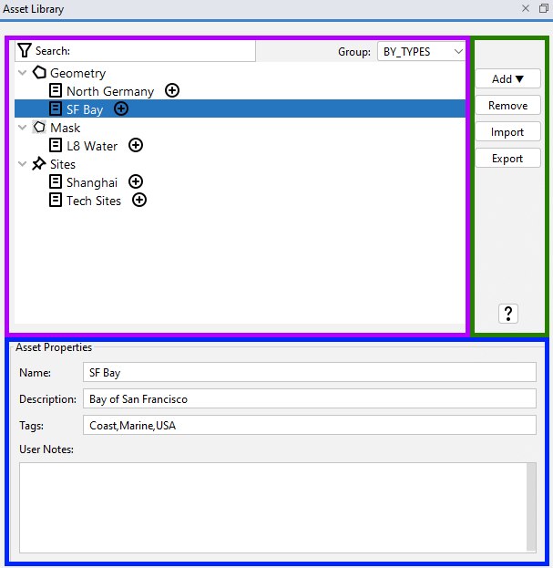
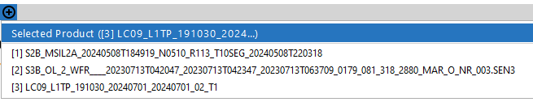
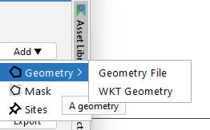

|
|
EOMasters Toolbox | |
The Asset Library allows you to collect the resources you most often use and have them accessible at any time without having to navigate through deeply nested directories in your file system or lookup the definition elsewhere. An asset is defined by general properties like its name, a brief description, and tags. In addition, it has type specific properties like a file path, a colour, or an expression. It is also possible to add notes to an asset. All the information is used when searching within your growing library and the tags can be used to group your assets. For example, if you have multiple assets tagged as water or urban, they are grouped together. The types of assets which are currently supported are explained on the Asset Types page.
The Asset Library is split into three areas. The tree area on the left, the button area on the right, and the property area at the bottom.

Within the tree area the assets are displayed. In the top-right you can switch between three types of grouping, by
type, by tag or nor grouping at all (plain). At the top-left it is possible to search for text occurrences in the
properties of the assets.
The plus-sign button allows you to add the asset to a data product opened in SNAP. A
selection panel will be shown if multiple products are currently opened in SNAP. It is omitted if there is only one.
If a product is selected, it is shown as the first option.

In this area you can add or remove assets to your library. You can also import list of assets from a before exported file. Great for sharing assets among your colleagues. And at there is also the help button which takes you here.
Add
A menu is shown when you click on the Add-button from which you can select the type of the asset you
want to add. The upcoming dialog for adding the asset is depending on the selected type.

Remove
This button simply removes the currently selected asset from the library.
Import
Opens a file dialog to choose an Json Asset File (*.jaf). Its content will be added to the
current library. Assets with the same name will be omitted.
Export
Opens a file dialog to export the content of the library into an Json Asset File (*.jaf).
? - Help
Opens this help page.
This are displays the properties of the selected asset and allows to modify them. These properties are the name, a description text and the tags assigned to the asset. There is also a section for notes where you can add additional information.